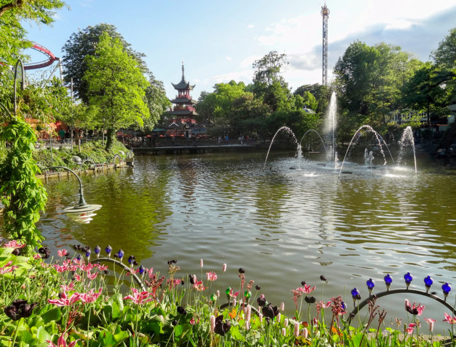
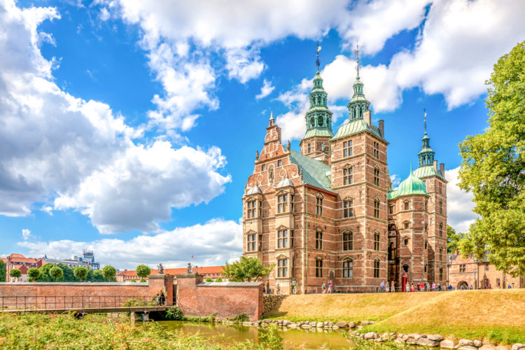
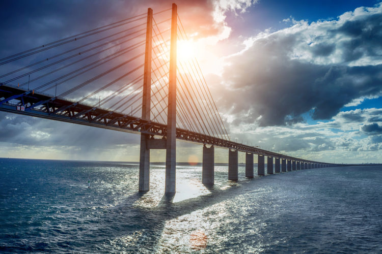
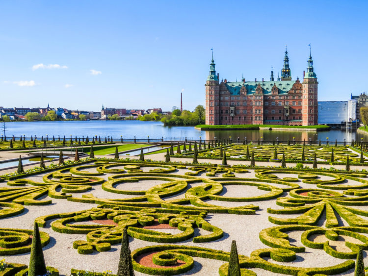
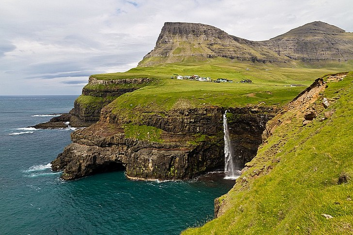

Географическое положение

История
Основание площади Азербайджана
Создание территории
Благоприятные природно-географические условия позволили человеку поселиться здесь с древнейших времён. Таким образом, стадное общество первобытного человека охватывало огромный период каменного века, точнее — более 1,5 млн лет. Больше всего стоянок древних людей было найдено в Карабахе, Казахе и Нахичевани. В Карабахе ценные находки выявлены в пещерах Азых, Таглар и Зар. В Казахском районе в пещерах Дашсалахлы и Дамджылы, а также на стоянках Шишгузей, Кекилли обнаружены орудия труда и другие материальные остатки. Стоянки людей каменного века выявлены также в Талышской зоне.
28 апреля 1920 года было объявлено о создании на территории АДР - Азербайджанской Советской Социалистической Республики (Азербайджанской ССР). В декабре 1922 г Азербайджан, Грузия и Армения образовали Закавказскую Социалистическую Федеративную Советскую Республику.
Достопримечательности
Парк Тиволи

Замок Розенборг

Копенгаген
Эресуннский мост

Копенгаген — Мальме
Замок Фредериксборг

Хиллеред
Фарерские острова

Торсхавн
Кухня
| Смёрребрёд |
|---|
| Колдскол |
|---|
| Millionbof |
|---|
| Эбле-флэск |
|---|